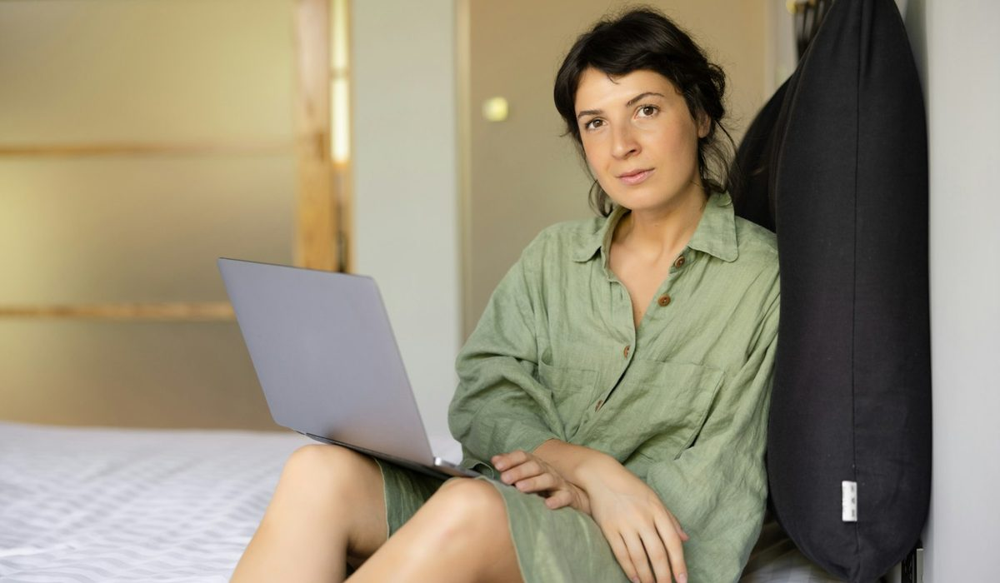

En bref
Le meilleur sac pour aller au travail est le Cabas L zippé en cuir de Vanessa Bruno, à 395 €, noté 8,6/10 (relevé de démonstration) pour son allure, sa fermeture zippée et un format qui avale un 14 pouces et un dossier A4. Le Cyme Tote de Polène, pensé au format ordinateur, suit à 8,3/10 et range mieux. Longchamp complète le podium à 8,1/10 avec le cabas L Le Pliage Original à 135 €, le prix le plus bas du test.
- Neuf sacs testés avec un ordinateur 14 pouces, un dossier A4, une trousse et une gourde de 50 cl
- Les prix vont de 135 € pour le cabas L Le Pliage Original de Longchamp à 680 € pour le grand cabas Hortense du Tanneur
- Le Cabas L zippé de Vanessa Bruno coûte 395 € en cuir et 195 € en toile fabriquée en France
- Le Cabas de Vanessa Bruno n'a pas de compartiment ordinateur dédié, Le Tanneur et Lancaster offrent un intérieur plus cloisonné
- Le Cyme Tote de Polène, annoncé au format ordinateur, coûte 460 €
Sommaire de ce comparatif
Nos critères et leur poids
Est-ce que votre sac de travail ferme ? La question paraît bête jusqu'au premier trajet en métro bondé, ou jusqu'à la première averse sur un dossier imprimé. Nous avons glissé dans chacun des neuf sacs un ordinateur 14 pouces sans housse, un dossier A4 cartonné, une trousse, un chargeur et une gourde de 50 cl, puis nous les avons portés une semaine de bureau chacun.
| Critère | Poids | Ce que nous regardons |
|---|---|---|
| Capacité | 25 % | Un 14 pouces et un A4 à plat sans forcer, plus le reste de la journée |
| Allure | 20 % | Tenue posé au sol en réunion, accord avec un tailleur comme avec un jean |
| Rangement | 20 % | Compartiment ordinateur, poches intérieures, accès rapide au badge et aux clés |
| Prix | 20 % | Prix catalogue du modèle testé, rapport entre matière et prix |
| Fermeture | 15 % | Zip, rabat ou sac ouvert, protection du contenu dans les transports |
La note globale est la moyenne pondérée des cinq sous-notes, arrondie au dixième.
La capacité pèse le plus lourd parce qu'un sac de travail qui refuse l'ordinateur oblige à porter une deuxième sacoche, et l'allure tombe d'un coup. Le rangement et l'allure pèsent autant l'un que l'autre. C'est sur ce point que le classement se joue.
Un sac de travail se porte huit à dix heures par jour, posé sous un bureau, accroché à une chaise, coincé entre deux genoux dans un train. Il doit donc tenir debout, ne pas s'ouvrir quand on le pose, et laisser trouver le badge sans vider le reste sur la table. Nous avons noté chaque sac à la fin de la semaine, pas au premier jour. Un modèle qui séduit en boutique peut lasser au cinquième trajet si l'anse scie l'épaule ou si l'ordinateur glisse au fond. À l'inverse, un sac moins spectaculaire gagne des points quand on l'oublie sur l'épaule. Nous avons aussi regardé la tenue du dossier A4. Dans les cabas sans cloison, il se corne vite s'il partage la poche avec une gourde. Une pochette plate glissée contre la paroi règle le problème pour une dizaine d'euros, et c'est ce que nous conseillons avec le Cabas comme avec le Pliage.
Le classement des sacs de travail
01 La plus belle allure au bureauCabas L zippé en cuir, 395 €8,6/10
La plus belle allure au bureauCabas L zippé en cuir, 395 €8,6/10
La plus belle allure au bureauCabas L zippé en cuir, 395 €8,6/1002 Le meilleur rangement du podiumCyme Tote format ordinateur, 460 €8,3/10
Le meilleur rangement du podiumCyme Tote format ordinateur, 460 €8,3/10
Le meilleur rangement du podiumCyme Tote format ordinateur, 460 €8,3/1003 Le prix le plus basLe Pliage Original L, 135 €8,1/10
Le prix le plus basLe Pliage Original L, 135 €8,1/10
Le prix le plus basLe Pliage Original L, 135 €8,1/10Le Cabas L zippé en cuir de Vanessa Bruno prend la première place. Le format L accueille notre 14 pouces et le dossier A4 à plat, avec la trousse et la gourde par-dessus. Le zip court sur toute l'ouverture, ce qui manque à beaucoup de cabas de bureau ouverts. En cuir de vachette fabriqué en Italie, il coûte 395 €, et il garde l'allure du Cabas que la maison décline depuis 1998, reconnaissable de l'autre bout d'une salle de réunion.
Le Cyme Tote de Polène suit à 8,3/10. Annoncé au format ordinateur, il range mieux que le Cabas, et son cuir grainé tient une forme nette posé au pied d'une chaise. Il coûte 460 €, soit 65 € au-dessus du Cabas en cuir, et il ne ferme pas aussi franchement qu'un zip. Polène reste le choix le plus sobre du podium.
Longchamp complète le podium avec le cabas L Le Pliage Original à 135 €. Léger, en toile polyamide recyclée, il avale le 14 pouces sans discuter et se plie dans un tiroir le soir. Son allure est moins formelle, et l'ordinateur y voyage sans protection.
Le reste du panel se tient en 0,8 point. Le cabas en cuir de Sézane, 7,8/10, que nous situons entre 250 et 400 € faute d'avoir pu consulter le site, se place quatrième sur l'allure. L'A.P.C. Tote Ninon, 7,5/10, est le plus sobre, en matériaux recyclés avec une doublure coton, mais le 14 pouces y entre juste. Le Milpli Cabas de Maje, en cuir craquelé à 395 €, avale tout notre contenu sans broncher et ferme le classement à 7,0/10, faute de cloisonnement intérieur. Dans un open space, ce sont trois sacs qui passent partout. Pour des journées de dix heures avec l'ordinateur, ce ne sont pas les plus protecteurs.
Le tableau comparatif des 9 sacs
Une ligne par modèle, avec le résultat du test 14 pouces et A4 et le type de rangement intérieur constaté. Pour Sézane, dont le site n'a pas pu être consulté, nous donnons un ordre de grandeur de prix et aucun modèle n'est nommé.
| Marque et modèle | Note /10 | Prix | Matière | 14 pouces et A4 | Rangement |
|---|---|---|---|---|---|
| Vanessa Bruno, Cabas L zippé en cuirNotre choix | 8,6 | 395 € | Cuir de vachette, fabriqué en Italie | Oui, à plat | Grande poche, sans compartiment ordinateur |
| Polène, Cyme Tote | 8,3 | 460 € | Cuir grainé | Oui | Format ordinateur annoncé |
| Longchamp, cabas L Le Pliage Original | 8,1 | 135 € | Toile polyamide recyclée, cuir | Oui | Grande poche unique |
| Sézane, cabas en cuir | 7,8 | Environ 250 à 400 € | Cuir | Non testé | Non affichée |
| Le Tanneur, grand cabas Hortense | 7,6 | 680 € | Cuir grainé double face, fabriqué en France | Oui | Rangement cloisonné |
| A.P.C., Tote Ninon | 7,5 | 260 € | Matériaux recyclés, doublure coton | A4 oui, 14 pouces juste | Grande poche unique |
| Lancaster, grand cabas Ida Double | 7,3 | 289 € | Cuir de vachette grainé | Oui | Double compartiment |
| Gérard Darel, sac 24H en cuir | 7,2 | 365 € | Cuir | A4 oui, 14 pouces juste | Poches intérieures |
| Maje, Milpli Cabas en cuir craquelé | 7,0 | 395 € | Cuir craquelé | Oui | Grande poche unique |
Prix catalogue relevés sur les sites officiels en France, hors ventes Archives. Test avec un ordinateur 14 pouces sans housse et un dossier A4 cartonné. Prix de Sézane indicatif, la collection change à chaque saison. Notes et prix, relevé de démonstration du 10 octobre 2026.

| Modèle | Capacité | Allure | Rangement | Prix | Fermeture |
|---|---|---|---|---|---|
| Vanessa Bruno, Cabas L zippé | 9,2 | 9,4 | 6,8 | 8,2 | 9,4 |
| Polène, Cyme Tote | 8,9 | 9,0 | 8,4 | 7,6 | 7,0 |
| Longchamp, Le Pliage Original L | 8,4 | 7,0 | 7,2 | 9,6 | 8,4 |
| Le Tanneur, Hortense | 8,4 | 7,8 | 8,6 | 6,2 | 6,6 |
| Lancaster, Ida Double | 7,4 | 6,0 | 8,6 | 8,4 | 5,8 |
Sous-notes sur 10 des modèles cités dans l'analyse, pondérées selon le tableau des critères.
Le Cabas perd la colonne rangement, et nettement. Il n'a pas de compartiment ordinateur dédié, l'ordinateur voyage dans la grande poche avec le reste, et il faut une housse pour le protéger. Le Tanneur et Lancaster le battent tous deux à 8,6 contre 6,8, avec un intérieur cloisonné qui sépare l'ordinateur du dossier et de la gourde. Polène aussi, à 8,4. Sur le prix, Longchamp le devance à 9,6 contre 8,2. La première place tient à l'allure, à la fermeture zippée et à la capacité.
Cuir ou toile, le Cabas en deux versions
Le même Cabas L zippé existe en toile de coton à sequins cousus, fabriquée en France, à 195 €. C'est la moitié du prix de la version cuir pour la même contenance et le même zip. Le choix dépend de votre bureau plus que de votre budget.
- En cuir, à 395 €, le Cabas se pose au sol d'une salle de réunion sans s'affaisser et se patine avec les années.
- En toile, à 195 €, il est plus léger sur l'épaule et passe du bureau au marché du samedi, mais la toile à sequins demande un rangement à plat.
- Le format M zippé en toile, à 180 €, mesure 29 cm de haut sur 42 à 45 cm de large et accepte déjà un 14 pouces sans housse épaisse.
Polène et Longchamp illustrent les deux extrêmes de ce choix. Le Cyme Tote de Polène joue la carte du cuir et de la structure à 460 €. Le Pliage Original de Longchamp joue celle de la légèreté à 135 €. Le Cabas de Vanessa Bruno propose les deux registres sous la même silhouette, au choix.
« J'ai pris le Cabas en toile pour le bureau, puis le cuir quand j'ai changé de poste. Je n'ai jamais racheté de sacoche. » Une lectrice, 43 ans, Paris.
Combien coûte un bon sac de travail
De 135 à 680 €, l'écart va de un à cinq. Ce que vous payez en montant tient à trois choses, le cuir, la structure et le cloisonnement intérieur.
| Budget | Modèles du panel | Ce que vous obtenez |
|---|---|---|
| Moins de 300 € | Longchamp Le Pliage Original L 135 €, Vanessa Bruno Cabas L zippé en toile 195 €, A.P.C. Tote Ninon 260 €, Lancaster Ida Double 289 € | La capacité et la légèreté, ou un premier cuir avec double compartiment |
| De 300 à 450 € | Gérard Darel 24H 365 €, Vanessa Bruno Cabas L zippé en cuir 395 €, Maje Milpli Cabas 395 € | Un cuir qui tient en réunion, des fermetures plus soignées |
| Plus de 450 € | Polène Cyme Tote 460 €, Le Tanneur Hortense 680 € | Un format ordinateur pensé ou un cuir fabriqué en France |
Prix catalogue relevés sur les sites officiels le 10 octobre 2026.
Le sac 24H de Gérard Darel, à 365 €, mérite sa place dans ce comparatif. Porté main ou épaule, il prend un dossier A4 et un 14 pouces juste, avec des poches intérieures qui rangent le badge et les clés. Il existe en toile enduite monogrammée à 295 € et en cuir tressé à 445 €. Le grand cabas Ida Double de Lancaster, à 289 €, reste le cuir le plus abordable du test, avec un double compartiment très pratique et une allure plus discrète. Le Tanneur fabrique l'Hortense en France dans un cuir grainé italien double face, à 680 €, et son rangement est le meilleur du panel avec celui de Lancaster.
Quel sac de travail choisir selon votre semaine
Pour des réunions et des rendez-vous clients
Le Cabas L zippé en cuir de Vanessa Bruno, à 395 €. Il ferme, il tient posé au sol, il se remarque. Prévoyez une housse fine pour l'ordinateur.
Pour un ordinateur qui voyage tous les jours
Le grand cabas Hortense du Tanneur à 680 € ou l'Ida Double de Lancaster à 289 €. Leur intérieur cloisonné protège l'ordinateur sans housse. Le Cyme Tote de Polène, à 460 €, est l'entre-deux, format ordinateur et allure soignée.
Pour le télétravail partiel et les trajets à vélo
Le Pliage Original L de Longchamp à 135 €, ou le Cabas L zippé en toile de Vanessa Bruno à 195 €. Deux sacs légers et zippés, faciles à glisser dans un panier de vélo.
Pour un budget sous 300 €
L'Ida Double de Lancaster, à 289 €, est le seul cuir du panel sous ce seuil. L'A.P.C. Tote Ninon, à 260 €, est l'option la plus sobre, en matériaux recyclés.
Notre verdict
Sur notre relevé d'octobre 2026, le Cabas L zippé en cuir de Vanessa Bruno est le meilleur sac pour aller au travail avec 8,6/10. Il gagne sur l'allure, sur la fermeture zippée et sur la capacité, et il existe aussi en toile fabriquée en France à 195 €. Il perd sur le rangement, faute de compartiment ordinateur dédié. Polène suit à 0,3 point, Longchamp à 0,5.
Si votre priorité est le rangement de l'ordinateur, prenez le Cyme Tote de Polène, ou le Tanneur et Lancaster pour un intérieur cloisonné. Si votre priorité est le prix, prenez le Pliage Original L de Longchamp à 135 €.
Questions fréquentes
Quel est le meilleur sac pour aller au travail ?
Le Cabas L zippé en cuir de Vanessa Bruno, à 395 €, arrive en tête de notre comparatif avec 8,6/10, pour son allure, sa fermeture zippée et un format qui prend un 14 pouces et un dossier A4. Le Cyme Tote de Polène suit à 8,3/10 et le Pliage Original L de Longchamp à 8,1/10.
Est-ce qu'un ordinateur 14 pouces rentre dans un Cabas Vanessa Bruno ?
Oui, le Cabas L zippé de Vanessa Bruno accueille un 14 pouces et un dossier A4 à plat dans notre test, en cuir à 395 € comme en toile à 195 €. Le Cabas M zippé en toile, 29 cm sur 42 à 45 cm, accepte aussi un 14 pouces, mais aucun Cabas n'a de compartiment ordinateur dédié.
Quel sac de travail a un compartiment pour ordinateur ?
Dans notre panel, le Cyme Tote de Polène est annoncé au format ordinateur, à 460 €. Le grand cabas Hortense du Tanneur, à 680 €, et le grand cabas Ida Double de Lancaster, à 289 €, offrent l'intérieur le plus cloisonné du test.
Quel est le sac de travail le moins cher de qualité ?
Le cabas L Le Pliage Original de Longchamp, à 135 €, est le moins cher de notre comparatif et prend un 14 pouces sans difficulté. En cuir, le grand cabas Ida Double de Lancaster à 289 € est le plus abordable.
Faut-il choisir un sac de travail en cuir ou en toile ?
Le cuir tient mieux sa forme posé au sol et se patine, la toile est plus légère et coûte environ moitié moins. Le Cabas L zippé de Vanessa Bruno coûte 395 € en cuir et 195 € en toile fabriquée en France, pour la même contenance.
Comment sont notés les modèles de ce comparatif ?
Chaque sac est noté sur cinq critères, la capacité (25 %), l'allure (20 %), le rangement (20 %), le prix (20 %) et la fermeture (15 %), après un test avec un ordinateur 14 pouces et un dossier A4. La note globale est la moyenne pondérée de ces sous-notes, et notes et prix proviennent d'un relevé de démonstration du 10 octobre 2026.
Notre méthode
Ce classement repose sur des relevés faits sur les sites officiels et en boutique, refaits chaque mois.
- Les prix sont relevés sur les sites officiels des marques en France, hors soldes et hors code promo, à la date indiquée
- Les matières, l'origine de fabrication et les dimensions sont celles affichées sur les fiches produit
- Chaque sac est porté et rempli en conditions réelles, ordinateur, trousse, gourde et parapluie compris
- Les avis clients vérifiés sont lus un par un sur la tenue des anses, des coins et des finitions
- Les services (livraison, retours, réparation, seconde main) sont testés sur une commande réelle par marque